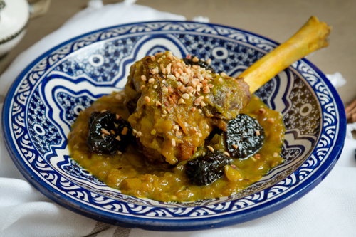
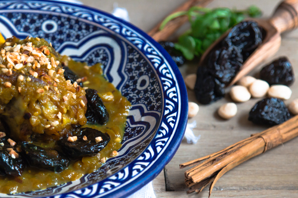
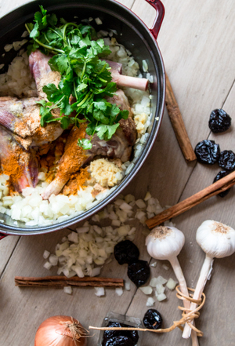
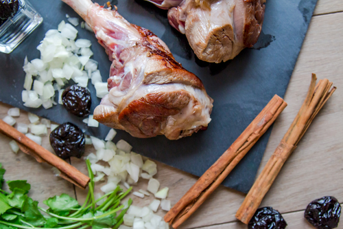

LAMB TAGINE WITH PRUNES

Yay! The legendary Moroccan meat tagine with caramelised prunes is finally on the blog. What took me so long!?
This is one of my favourite sweet and savoury Moroccan dish because I find that the various flavours of this tagine beautifully balance each other. The sweet and caramelised prunes work perfectly with the deep and richly spiced meat and onion sauce.
You will find a lot of different recipes of this tagine online. The one I am sharing with you today is a very authentic version but also the the way I like it. I tend to use more onions because I like to have a thick sauce. And you know, more sauce always means more pleasure and yumminess. Also, some of the recipes don’t advise to cook the prunes separately; there is nothing wrong with it. The reason why I think it’s better to cook them separately is because this allows to caramelise the prunes properly and also prevents the whole dish from turning brown/black-ish.

Everyone should try this all time classic at least once throughout their life! It is divinely tasty and it will make your taste buds travel somewhere warm and colourful!


INGREDIENTS
- 2 tablespoons olive oil
- 1.2 kg lamb shanks trimmed of excess fat (about 4 small or 3 large shanks) - check notes for other types of meat
- 4 large onions (about 800 gr), chopped
- 1 tablespoon finely chopped garlic (about 4 cloves)
- 1 teaspoon ground turmeric
- 1 teaspoon ground ginger
- 1 teaspoon salt or more to taste
- ¼ teaspoon ground black pepper
- ¼ teaspoon saffron
- 1 large coriander bouquet, tied
- Toasted sesame seeds or chopped roasted almonds for garnish
Caramelised prunes
- 300 gr soft dried prunes
- 3 tablespoons honey
- 1 teaspoon ground cinnamon
METHOD
- In a large casserole, heat the olive oil to medium-high heat and brown the lamb shanks on each side. Make sure the pan is very hot before placing the meat in the pan, you should hear a sizzle when the meat touches the pan, if you don't, it means the pan is not warm enough. The meat will be naturally released once browned, don’t be tempted to flip it earlier. If you try to flip too early, you will notice that the meat sticks to the pan and you might damage it .
- Remove the browned lamb shanks from the pan and set aside. In the same casserole, place the onions and lower the heat to medium. Cover with a lid and leave the onions until they are soft and translucent, about 10 to 15 minutes. This will allow sweating the onions
- Once you’ve sweated the onions, place the lamb shanks, the garlic, spices, salt and pepper in the casserole. Pour a cup and half of water (320 ml) in the casserole and place the coriander bouquet on top of the meat. Bring to the boil and cover with a lid over medium-low heat. Leave to simmer gently for 2 hours or until the meat is soft and separates easily from the bone
- Halfway through cooking, after about 1 hour, reserve ½ cup of liquid from the casserole and set aside. At this stage, if it looks like there is almost no liquid left in the tagine, add a few tablespoons (or 1/4 a cup) of water in the casserole to avoid the tagine from drying out and sticking to the pan.
- Meanwhile, prepare the caramelized prunes. Transfer the prunes in boiling water for 5 minutes to soften them and drain. Then, in a small deep skillet, transfer the liquids you reserved earlier (½ cup) along with the drained prunes, cinnamon and honey over medium-low heat. Leave to simmer for 5 minutes until the sauce starts to thicken. Set aside until ready to serve.
- To serve, place the lamb shank and the onion sauce in a plate, arrange the prunes and the syrup (from the prunes) on top. Garnish with toasted sesame seeds or chopped roasted almonds. Enjoy with a side of couscous or crusty bread.